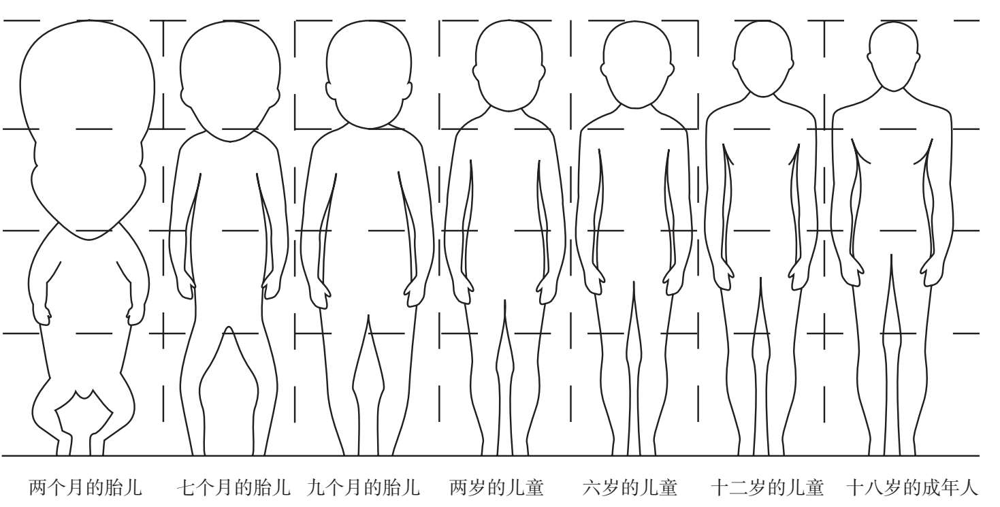

我们在第二章中已经证明，在黄金矩形的长边一侧增加一个边长与之相等的正方形，这样就得到了另一个黄金矩形。因为所有黄金矩形的邻边之比相同（都等于Φ），所以它的尺寸增大但形状保持不变。同理，我们从黄金矩形中去掉一个正方形后得到的还是黄金矩形。由此可以确定黄金矩形的磬折形是正方形。只有黄金矩形才具有这一性质。因此要想保持形状不变，可以使用黄金比例来改变事物的大小。我们可以通过观察生物的生长来进行验证，这一性质在植物身上尤为明显。
为了理解“保持形状”究竟是什么意思，首先请思考一下人类。随着我们的成长，人体的比例是否会一直不变？答案肯定是不会。应该说人类的成长是一个身体比例不断变化的过程。虽然这并没有什么大不了，但随着年龄的增长，身体比例发生变化是一件好事。如果我们的身体比例从出生时就保持不变，那么要想让头部直立起来都会非常困难。
从另一方面我们也看到，黄金螺线在旋转增大的过程中与其他螺线有着本质上的区别。苏格兰的生物学家达西·汤普森（1860—1948）被认为是首位“生物数学家”。他指出，在不改变整体外形的情况下，某些生物的生长方式具有对数螺线的特点，与其他数学曲线没有任何关系：“对于任何从固定极点出发的平面曲线来说，两条极线与该曲线会围成一个以极点为顶点、不断增大的扇形，如果这个扇形的磬折形总是它的前一个扇形，那么这种曲线就是对数螺线。”
昆虫会沿着黄金螺线的轨迹接近光源。如果我们希望在靠近而不是远离固定点的过程中保持转向的角度不变，那么我们只能按照黄金螺线的轨迹行走。猛禽在扑向猎物时也保持着这种轨迹，只有这样它们才能保持头部抬起，在最大加速过程中让猎物一直出现在视野的相同位置。

人类在不同成长阶段头身比的变化。